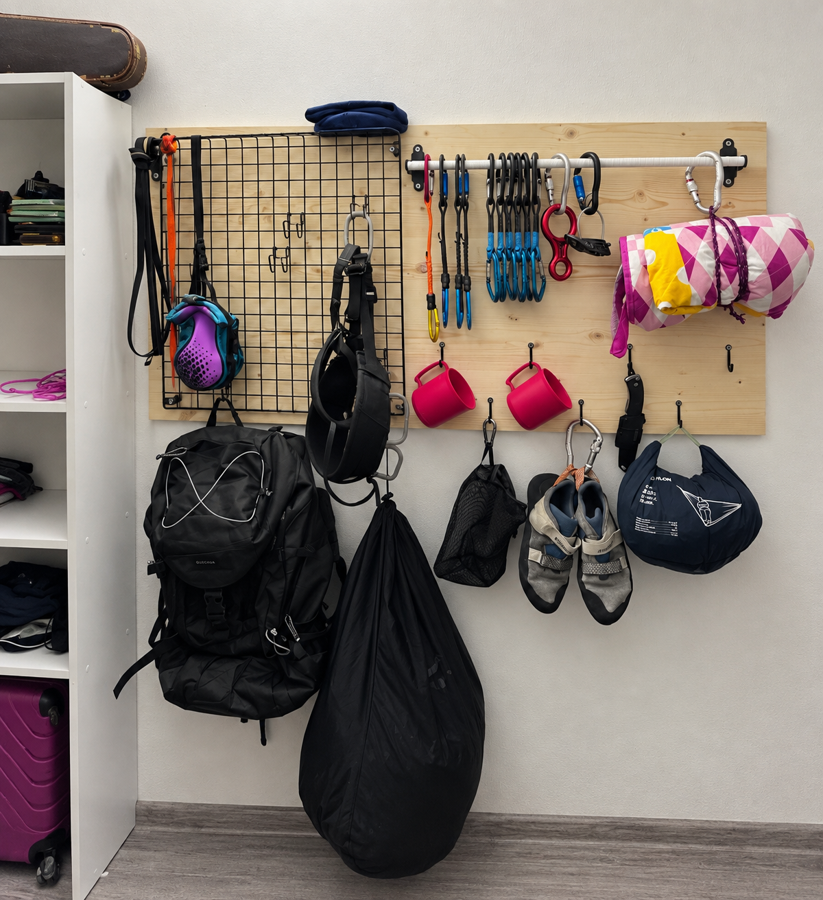

1. Lezecký batoh
Batoh používam na prenášanie vybavenia pri tréningoch a výletoch na skaly.
Vo voľnom čase sa rád venujem lezeniu. Rozvíjam pri ňom silu, vytrvalosť, sústredenie a schopnosť spolupracovať.
Na fotografii je moje lezecké vybavenie. Jednotlivé body zobrazujú viac informácií.
Vyberiem číslo na obrázku a zobrazia sa informácie o vybavení.

Batoh používam na prenášanie vybavenia pri tréningoch a výletoch na skaly.
Úväz používam pri istenom lezení. Pred lezením vždy kontrolujem jeho správne nasadenie.
Používam ich pri istenom lezení. Pri lezení vo dvojici je dôležitá tímová spolupráca, dôvera a vzájomná kontrola.
Lezečky mi pomáhajú pri presnom pohybe a správnej technike nôh na lezeckej stene.
Krieda pomáha udržiavať ruky suché a zlepšuje úchop na chytoch.